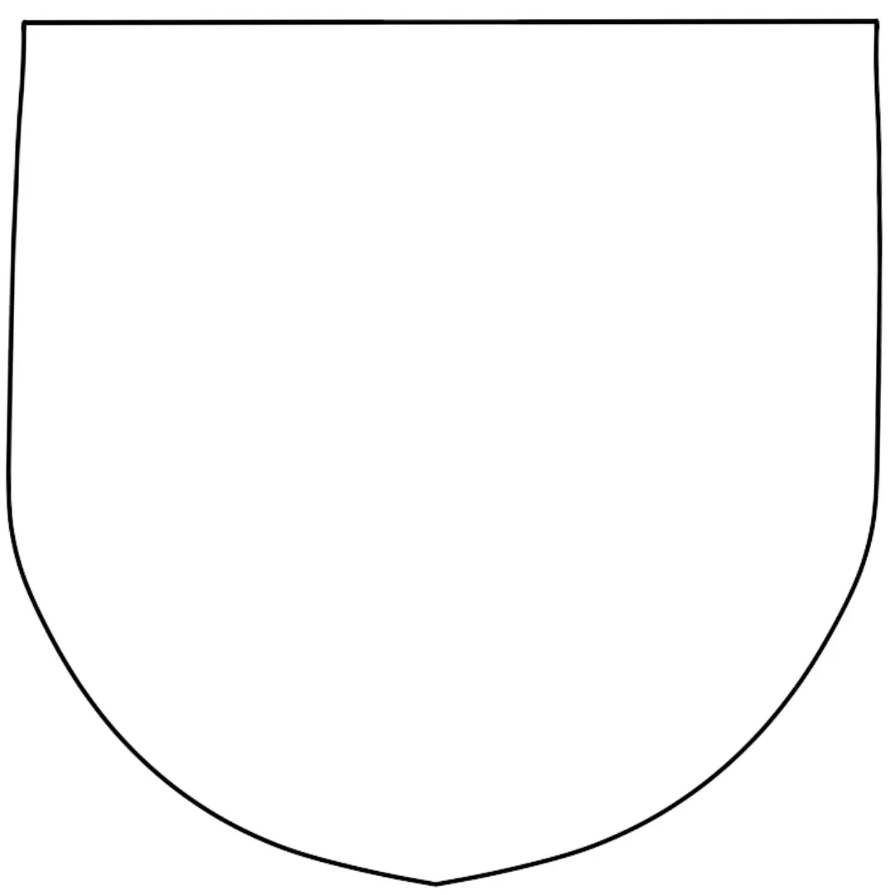

This website is a collection of thoughts and experiences of a wife whose husband is at war. Read all about this mysterious woman's experiences through her journals, which occured around the World War II era.
